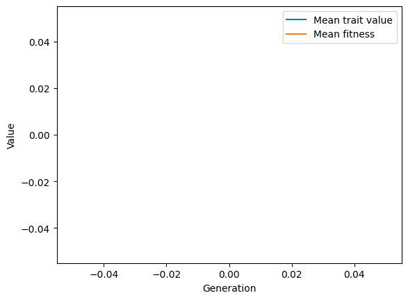

Gaussian stabilizing selection with an optimum shift
Gaussian stabilizing selection with an optimum shift#
This vignette simulates the evolution of a population to a single sudden shift in the optimum trait value.
First, we define a class that will track the mean genetic value and mean fitness of the population over time. See Recording data during a simulation for details.
import numpy as np
class Recorder(object):
def __init__(self, start):
self.generation = []
self.gbar = []
self.wbar = []
self.start = start
def __call__(self, pop, sampler):
if pop.generation > self.start:
self.generation.append(pop.generation)
md=np.array(pop.diploid_metadata, copy=False)
self.gbar.append(md['g'].mean())
self.wbar.append(md['w'].mean())
Now, we will set up and simulate the model.
We use fwdpy11.GSSmo to specify when/how the optimum value shifts.
We will simulate the population for \(10N\) generations around an optimum of zero.
Then, we shift the optimum to 1 and evolve another 200 generations.
We set our Recorder type defined above to start tracking things after the initial “burn in”.
import fwdpy11
pop = fwdpy11.DiploidPopulation(500, 1.0)
rng = fwdpy11.GSLrng(54321)
GSSmo = fwdpy11.GSSmo(
[
fwdpy11.Optimum(when=0, optimum=0.0, VS=1.0),
fwdpy11.Optimum(when=10 * pop.N, optimum=1.0, VS=1.0),
]
)
rho = 1000.
p = {
"nregions": [],
"gvalue": fwdpy11.Additive(2.0, GSSmo),
"sregions": [fwdpy11.GaussianS(0, 1., 1, 0.1)],
"recregions": [fwdpy11.PoissonInterval(0, 1., rho / float(4 * pop.N))],
"rates": (0.0, 1e-3, None),
# Keep mutations at frequency 1 in the pop if they affect fitness.
"prune_selected": False,
"demography": fwdpy11.DiscreteDemography(),
"simlen": 10 * pop.N + 200,
}
params = fwdpy11.ModelParams(**p)
r = Recorder(start=10 * pop.N)
fwdpy11.evolvets(rng, pop, params, 100, recorder=r, suppress_table_indexing=True)
Finally, let’s plot the results:
import matplotlib.pyplot as plt
f, ax = plt.subplots()
ax.plot(r.generation, r.gbar, label="Mean trait value")
ax.plot(r.generation, r.wbar, label="Mean fitness")
ax.set_xlabel("Generation")
ax.set_ylabel("Value")
plt.legend()
plt.show()
